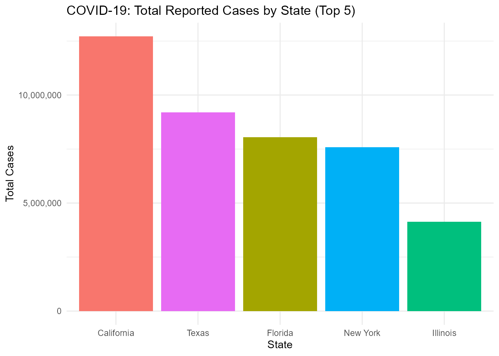
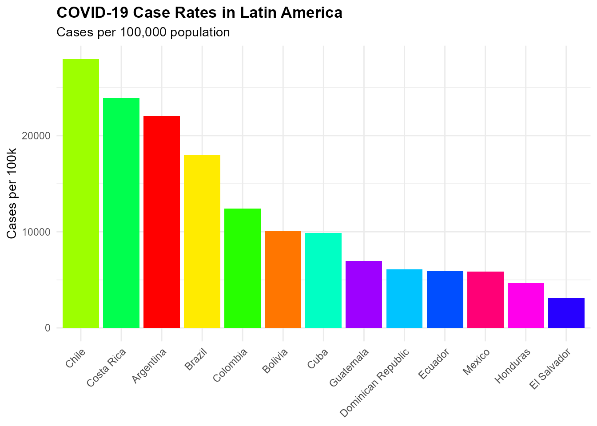

infectiousR: Access Infectious and Epidemiological Data via disease.sh API
Source:vignettes/infectiousR_vignette.Rmd
infectiousR_vignette.Rmd
library(infectiousR)
library(dplyr)
#>
#> Attaching package: 'dplyr'
#> The following objects are masked from 'package:stats':
#>
#> filter, lag
#> The following objects are masked from 'package:base':
#>
#> intersect, setdiff, setequal, union
library(ggplot2)Introduction
The infectiousR package provides a seamless interface to
access real-time data on infectious diseases through the
disease.sh API, a RESTful API offering global health
statistics. The package enables users to explore up-to-date
information on disease outbreaks, vaccination progress, and surveillance
metrics across countries, continents, and U.S. states.
It includes a set of API-related functions to retrieve real-time statistics on COVID-19, influenza-like illnesses from the Centers for Disease Control and Prevention (CDC), and vaccination coverage worldwide.
Additionally, infectiousR offers a built-in function to
view the datasets available within the package. The package also
includes curated datasets on infectious diseases such as
influenza, measles, dengue, Ebola, tuberculosis, meningitis, AIDS, and
others — making it a comprehensive resource for real-time
monitoring and historical analysis of global infectious disease
data.
Functions for infectiousR
The infectiousR package provides several core functions
to retrieve real-time infectious disease data from the disease.sh API.
Below is a list of the main API-access functions included in the
package:
get_global_covid_stats()– Retrieves global COVID-19 statistics, including total cases, deaths, recoveries, and more.get_covid_stats_by_country_name()– Fetches COVID-19 statistics for a specific country by name (e.g., “Brazil”, “India”).get_covid_stats_by_country()– Retrieves COVID-19 data for all countries.get_covid_stats_by_continent()– Retrieves COVID-19 data grouped by continent.get_us_states_covid_stats()– Returns COVID-19 statistics for all U.S. states.get_covid_stats_for_state()– Retrieves data for specified U.S. states (e.g., “NEW YORK”, “california”).get_influenza_cdc_ili()– Accesses influenza-like illness (ILI) data from the CDC.view_datasets_infectiousR()– Lists all curated datasets available in the infectiousR package.
These functions enable users to access up-to-date, structured
information on infectious diseases, which can be combined with tools
such as dplyr and ggplot2 for powerful
epidemiological analysis and visualization. In the next section, we’ll
explore a use case to demonstrate how to visualize COVID-19 data with
infectiousR.
US COVID-19 Statistics: Top 5 States by Total Cases
# Load the COVID-19 data (from your package)
covid_data <- get_us_states_covid_stats()
# Select the first 5 rows and remove columns with only NA values
covid_clean <- covid_data %>%
slice_head(n = 5) %>%
select(where(~ !all(is.na(.))))
# Plot: Bar plot with different colors and readable y-axis (no scientific notation)
ggplot(covid_clean, aes(x = reorder(state, -cases), y = cases, fill = state)) +
geom_bar(stat = "identity") +
scale_y_continuous(labels = function(x) format(x, big.mark = ",", scientific = FALSE)) +
labs(
title = "COVID-19: Total Reported Cases by State (Top 5)",
x = "State",
y = "Total Cases"
) +
theme_minimal() +
theme(legend.position = "none")
COVID-19 Case Rates in Latin America
get_covid_stats_by_country() %>%
filter(country %in% c("Argentina", "Bolivia", "Brazil", "Chile", "Colombia",
"Costa Rica", "Cuba", "Dominican Republic", "Ecuador",
"El Salvador", "Guatemala", "Honduras", "Mexico")) %>%
select(-updated, -starts_with("today")) %>%
mutate(case_rate = (cases/population)*100000) %>%
ggplot(aes(x = reorder(country, -case_rate),
y = case_rate,
fill = country)) +
geom_col() +
scale_fill_manual(values = rainbow(n = 13)) + # Built-in rainbow palette
labs(title = "COVID-19 Case Rates in Latin America",
subtitle = "Cases per 100,000 population",
x = NULL,
y = "Cases per 100k") +
theme_minimal() +
theme(axis.text.x = element_text(angle = 45, hjust = 1),
plot.title = element_text(face = "bold"),
legend.position = "none")
Datasets Included in infectiousR
In addition to API functions, infectiousR includes
several preloaded datasets that provide valuable insights into various
aspects of infectious diseases such as influenza, measles, dengue,
Ebola, tuberculosis, meningitis,AIDS, and others:
spanish_flu_df: Contains daily mortality records from the 1918 influenza pandemic.fungal_infections_df: Provides clinical treatment outcomes for systemic fungal infections.aids_azt_df: Documents AIDS symptom progression and zidovudine (AZT) treatment responses.meningitis_df: Records meningococcal disease cases with treatment response metadata (includes missing data indicators).
Conclusion
The infectiousR package provides a robust toolkit for
accessing and analyzing global infectious disease data through the
disease.sh API and curated epidemiological datasets.
From real-time COVID-19 statistics to historical records of bacterial,
viral, and fungal infections (including tuberculosis, AIDS, meningitis,
and the 1918 influenza pandemic), infectiousR empowers
researchers to conduct comprehensive disease surveillance and trend
analysis.